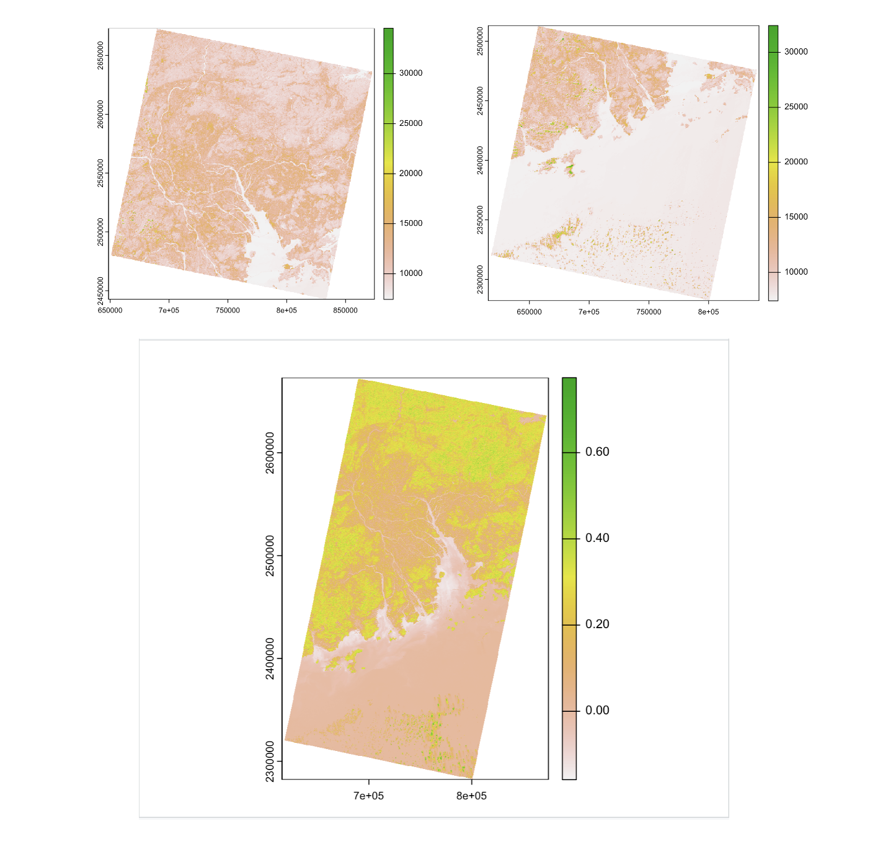
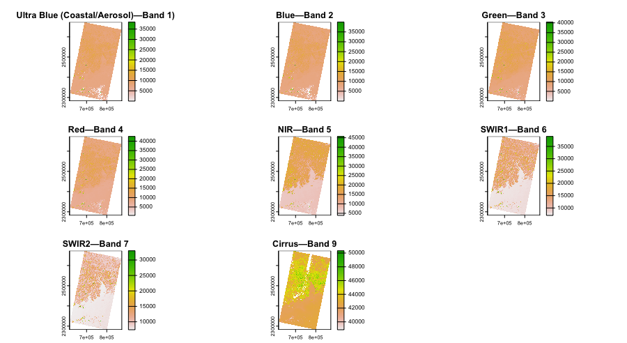
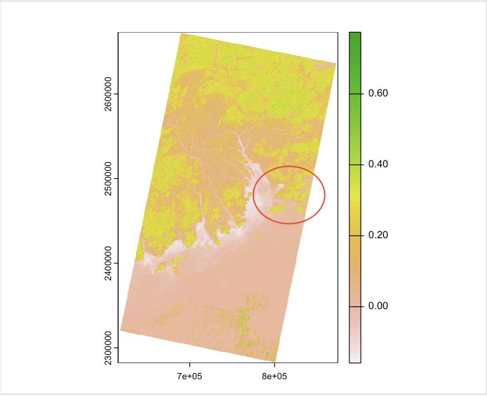
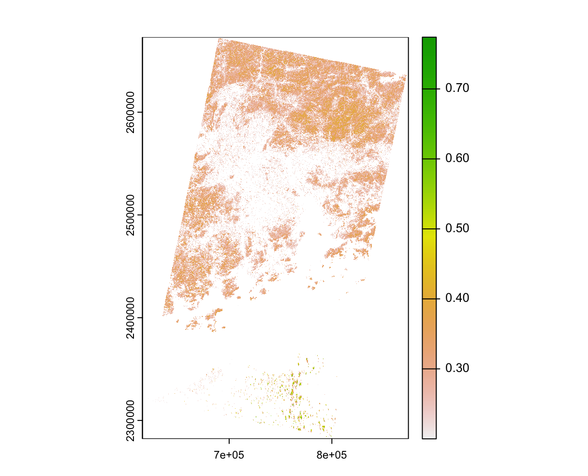
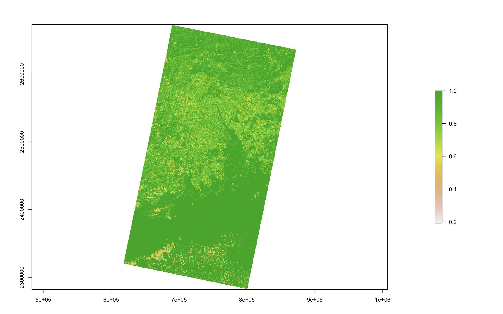
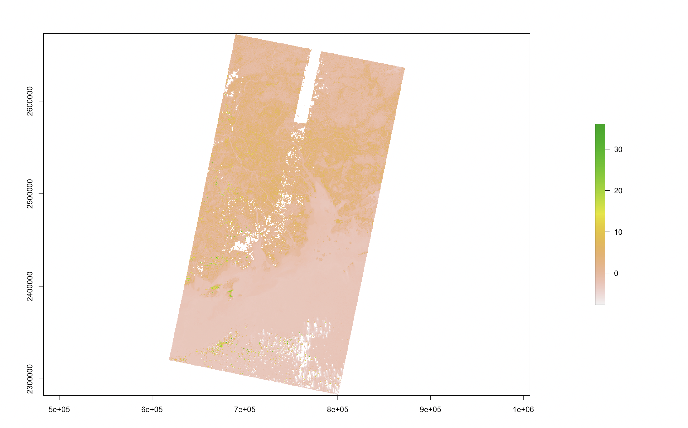

3.1 Summary of Lecture 3
3.1.1 Correction
Raw remote sensing images are known to have notable distortions and flaws, which is mainly caused by the curved Earth, incompletely transparent atmosphere, varying solar radiation throughout the day and limitations of instruments. Therefore, most of the raw data captured by remote sensors are preprocessed to remove most of the flaws, it is called Image Correction.
Below shows a summary of 4 different correction methods, including Geometric correction, Atmospheric correction, Orthorectification correction and Radiometric correction.
3.1.2 Mosaicking images
In some cases, some areas we want to observe or the Region of interest (ROI) cannot be completely acquired from a single image, therefore, we would use mosaicking, a procedure to create a new large area image from multiple overlapping images on the same areas. The typical image mosaicking procedure includes 3 steps, including 1) tonal adjustment 2) seamline detection, and 3) image blending. In R, the function of “mosaic()” does the whole process in 1 line to form a new object with a larger spatial extent. We can specify which function to use such as mean, minimum and maximum value for output.
3.1.3 Corrections in Hong Kong
In this practical, I have chosen 4 tiles that consist parts of Hong Kong, including 1 Landsat 8 tile and 3 Landsat 9 tiles. However, as the tiles are with 2 different coordinate reference system of EPSG:32650 for two of them and EPSG:32649 for the remaining two tiles. I have tried using different methods to reproject rasters into the same projection (EPSG: 32649), however, the resolutions for the images are different from each other with 30.03617, 30.03617 (x, y) and 30.05118, 30.05118 (x, y). Hence, with limimte time and I couldn’t figure how to alter resolution to create a mosaic image with 4 raster images. I decided to only used two of tiles to create mosaic image of the Pearl River Delta whicn includes also Hong Kong. It works fine considering Hong kong is a really small area and can fit well with two of the images.

Below shows a summary of the initial obtained image of the mosaic image, which are bands of Landsat 9. Landsat 9 is similar to Landsat 8, but is designed to image four visible spectral bands, one near-infrared spectral band, three shortwave-infrared spectral bands at 30 m (98 ft) spatial resolution, and one panchromatic band at 15 m (49 ft) spatial resolution, and two thermal bands at 100 m (328 ft) spatial resolution. In this practical, band 8 of the spectral bands are not used. Band 1 is used specially to measure chlorophyll concentrations, band 9 is used to detect cirrus clouds by measuring light in the part of the electromagnetic spectrum where the clouds are most visible.

3.2 Application
3.2.1 Image Enhancment with the mosaicked images in Hong Kong – NDVI
Some of the basic image enhancements were done in this practical. As numerous remote sensing applications such as mapping, classification, soil moisture detection require high resolution and high quality images, therefore , the raw remote sensing images can be enhanced by improving the contrast and edge information of the input image. I have followed the steps in the practical to create the Normalised Difference Vegetation Index (NDVI) for the images around Hong Kong. It is calculated from the visible and near-infrared light reflected by vegetation where healthy and green vegetation reflects more in the NIR and absorbs in the Red wavelength. The land surfaces shown below are mostly yellowish (0.2-0.4) in colour, except where the delta lies in the middle. The colour scheme for the red circled area (Hong Kong) displayed shows gradual change from yellow to green (>0/4). The green areas are mostly green spaces are hills in Hong Kong.

The index between 0.2-0.4, which is shown in yellow colour here, refers to the presence of sparse vegetation while value above 0.4 refers to moderate to high density of vegetation. The lower figure has pulled out areas with vegetation, where NDVI values are set to equal or above 0.2. I think it is effective to generate different indexes to identify different land features, then create filters with certain value to pull out the features more precisely.

3.2.2 Different Indices for image enhancement
The table below shows some other different indices and corresponding equations for different features’ identification, such as water, geology and landscape indices. I think this makes remote sensing a very useful tool as it helps identify different land features easily.
| Image Indices | Equation |
|---|---|
| Modified Soil Adjusted Vegetation Index (MSAVI2) | MSAVI2 = (1/2)*(2(NIR+1)-sqrt((2*NIR+1)2-8(NIR-Red))) |
| Soil-Adjusted Vegetation Index (SAVI) | SAVI = ((NIR - Red) / (NIR + Red + L)) x (1 + L) |
| Normalized Difference Snow Index (NDSI) | NDSI = (Green - SWIR) / (Green + SWIR) |
| Modified Normalized Difference Water Index (MNDWI) | MNDWI = (Green - SWIR) / (Green + SWIR) |
| Normalized Difference Moisture Index (NDMI) | NDMI = (NIR - SWIR1)/(NIR + SWIR1) |
| Clay Mineral Ratio | Clay Minerals Ratio = SWIR1 / SWIR2 |
| Ferrous Minerals Ratio | Ferrous Minerals Ratio = SWIR / NIR |
| Iron Oxide Ratio | Iron Oxide Ratio = Red / Blue |
| Burn Area Index (BAI) | BAI = 1/((0.1 -RED)^2 + (0.06 - NIR)^2) |
| Normalized Burn Ratio Index (NBRI) | NBR = (NIR - SWIR) / (NIR+ SWIR) |
| Normalized Difference Built-up Index (NDBI) | NDBI = (SWIR - NIR) / (SWIR + NIR) |
3.2.3 Texture analysis
The next interesting thing of this practical is the texture analysis. Image texture is generally considered as the change and repeat of image grey in space, by adding texture information to the original spectral information of the image can improve the correction and precision. Image texture is the quantification of intuitive qualities described by terms such as rough, smooth, silky, or bumpy as a function of the spatial variation in pixel intensities. I used band 4 (red) and band 5(NIR) for texture analysis illustration, Grey Level Co-occurrence Matrices (GLCM) is adopted to describe the basic cell of texture orrandom and spatial statistic character in local pattern. To find texture features from GLCM for texture classification, the criteria of Homogeneity is adopted, which measures the closeness of the distribution of elements in the GLCM to the GLCM diagonal. Some other possible criteria such as Energy, Entropy, Contrast etc. This is the result for GLCM in homogeneity in the image, it shows that most of the area is close to 1, especially for ocean, while at the peak or higher area, the image shows more with pink to orange colour. the green colour region, which is ocean in this case, are smoother while the areas with pink to orange colour, they are dispersed and disconnected, it is more rough, probably, they are with vegetation and not uniform elevation and texture.

3.2.4 Principal Component Analysis (PCA)
This is the result for the Principal Component Analysis in Hong Kong. PCA analysis aims to reduce dimensionality of the data, and in the figure below, it shows how the components varies and are similar to each other in PC 1 band of the image. Also the table below displays the whole statistics of the 9 components with standard deviation, variance and cumulative proportion. The highest variance is component 1, constituting 79% meaning that the more important this component is.

| Component 1 | Component 2 | Component 3 | Component 4 | Component 5 | Component 6 | Component 7 | Component 8 | Component 9 | |
|---|---|---|---|---|---|---|---|---|---|
| Standard deviation | 2.6720079 | 0.8317190 | 0.7078958 | 0.5985590 | 0.4424598 | 0.2908058 | 0.1294195 | 0.1008848 | 0.0442961 |
| Proportion of Variance | 0.7932918 | 0.0768618 | 0.0556796 | 0.0398081 | 0.0217523 | 0.0093964 | 0.0018610 | 0.0011309 | 0.0002180 |
| Cumulative Proportion | 0.7932918 | 0.8701536 | 0.9258332 | 0.9656413 | 0.9873936 | 0.9967901 | 0.9986511 | 0.9997820 | 1.0000000 |
Summary of PCA analysis
PCA and Texture analysis are applied in various researches. The principal components (PCs) obtained by PCA are linearly independent and are sorted by variance in descending order. An iconic application of PCA is deforestation monitoring by
3.3 Reflection
Correction in satellite images are very important, because there are actually many error source, such as geometric, radiometric, atmospheric errors that cannot be avoided. For example, a satellite that travels in an orbit with an angle of 30 degree will always take image in that angle, hence, creating a skewed image that requires correction before using it for analysis or research purpose. I also think that texture analysis is